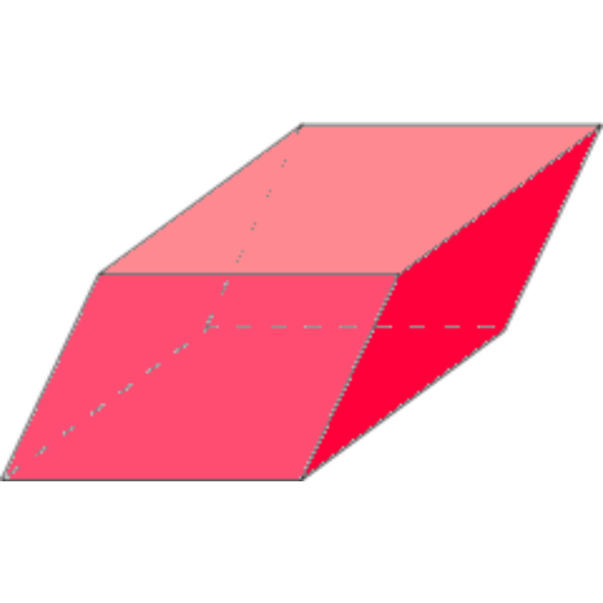

Romboedro
O romboedro é uma figura geométrica tridimensional que se destaca pela sua forma única e simetria. Ele pertence à família dos sólidos geométricos chamados de paralelepípedos, que incluem também o cubo e o prisma. O romboedro se diferencia dos outros membros dessa família pela forma de suas faces.
Características Principais
1. Faces:
Um romboedro tem seis faces, todas elas romboidais. Um romboide é um paralelogramo onde os lados opostos são congruentes, mas os ângulos não são necessariamente retos.
2. Arestas:
Assim como outros sólidos geométricos, o romboedro possui 12 arestas. Cada aresta conecta dois vértices, formando os limites entre as faces.
3. Vértices:
O romboedro tem 8 vértices. Cada vértice é o ponto de encontro de três ou mais arestas.
4. Simetria:
Uma das características marcantes do romboedro é a sua simetria. Ele possui diversos planos de simetria que dividem o sólido em partes iguais. Isso significa que se você dividir um romboedro por um desses planos, as partes resultantes serão idênticas.
5. Relação com outras formas:
O romboedro é um sólido geométrico relacionado a outras formas, como o cubo e o prisma. Por exemplo, um cubo pode ser considerado um caso especial de romboedro, onde todas as faces são quadrados.
O romboedro é muito mais do que uma figura geométrica abstrata. Sua simetria elegante e propriedades únicas o tornam uma figura fascinante tanto para a matemática pura quanto para aplicações práticas em diversos campos. Explorar suas características e aplicações pode ampliar nossa compreensão do mundo ao nosso redor, mostrando como a geometria está presente em muitos aspectos da vida cotidiana.